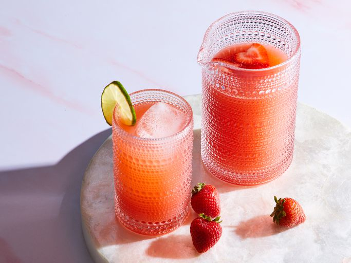

Strawberry Agua Fresca
Home

Description
This strawberry agua fresca is an extremely flavorful and refreshing chilled Mexican drink you can easily make at home, especially in summer when fresh strawberries are in season.
Ingredients
- 4 cups fresh ripe strawberries, sliced
- 1 cup white sugar
- 8 cups cold water, divided
- 5 cups ice for serving, or as needed
- 1 lime, cut into 8 wedges
- 8 fresh mint sprigs
Steps
- Gather all ingredients.
- Mix together strawberries, sugar, and 1 cup cold water in a medium bowl. Cover the bowl with plastic wrap and place in the refrigerator for 4 hours.
- Pour chilled strawberry mixture into a blender. Blend on high until smooth.
- Pour through a wire mesh strainer set over a large bowl; discard pulp and seeds.
- Stir remaining 7 cups cold water into strawberry juice until aqua de fresa is well combined.
- Fill glasses with ice. Pour aqua de fresa over ice. Garnish each serving with lime wedges and mint leaves.